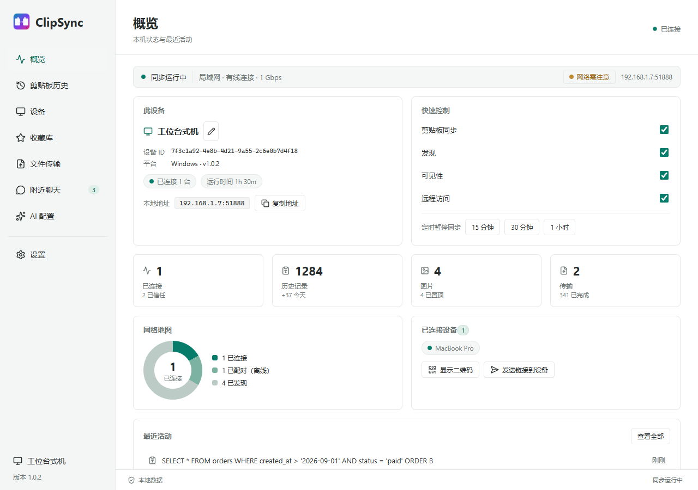

桌面端 · Windows / macOS / Linux
一台设备复制，另一台即刻粘贴。
局域网直连，端到端加密。没有账号，没有云端，没有中间服务器 —— 剪贴板、文件、聊天，你机器上的东西只在你的机器之间流动。
传输 TLS 1.3 · 每帧 AES-256-GCM
身份 Ed25519 · TOFU 指纹锁定
发现 mDNS · 端口 19990
落盘 AES-256-GCM · PBKDF2 60 万次迭代
CLIP v1TLS 1.3AES-256-GCM 逐帧局域网直连不经过任何服务器
